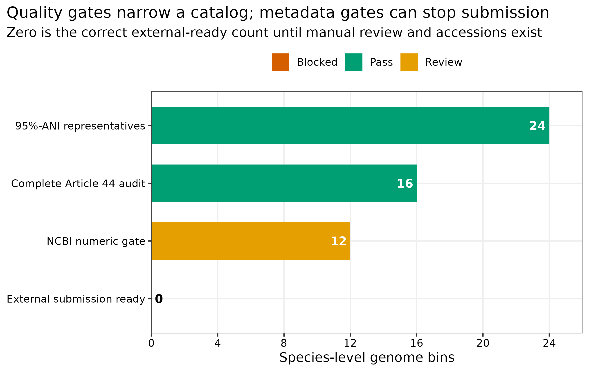
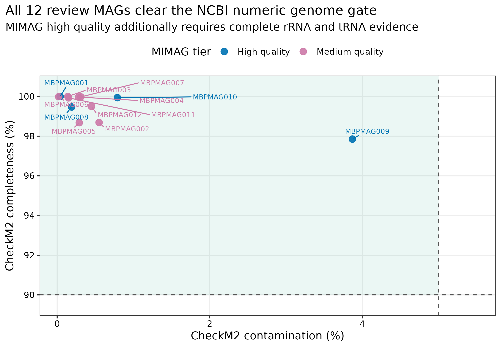
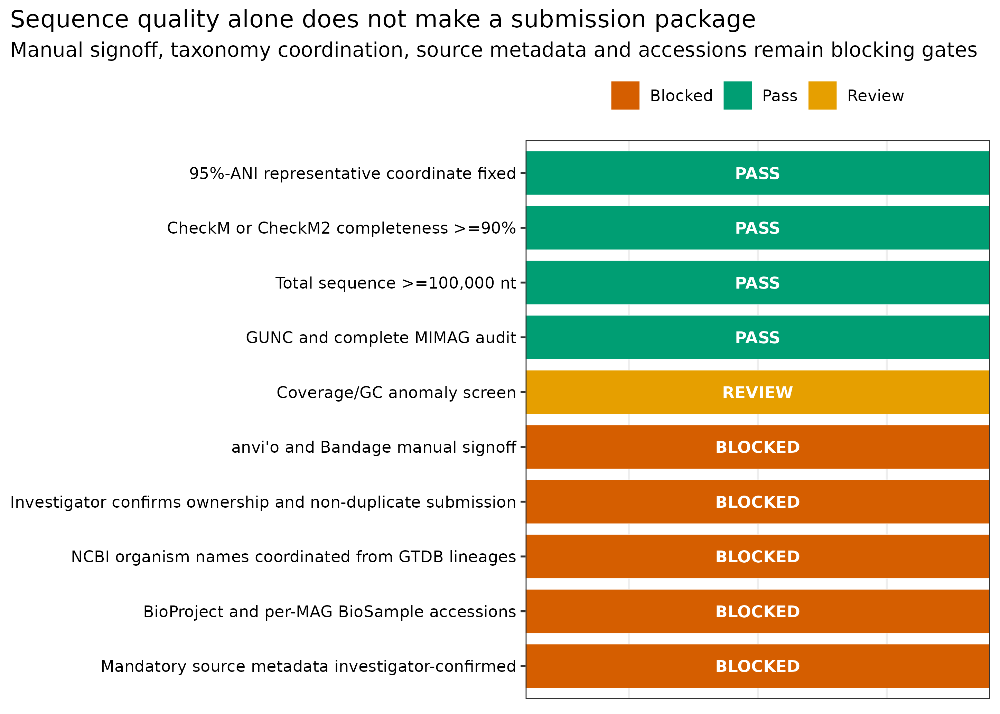
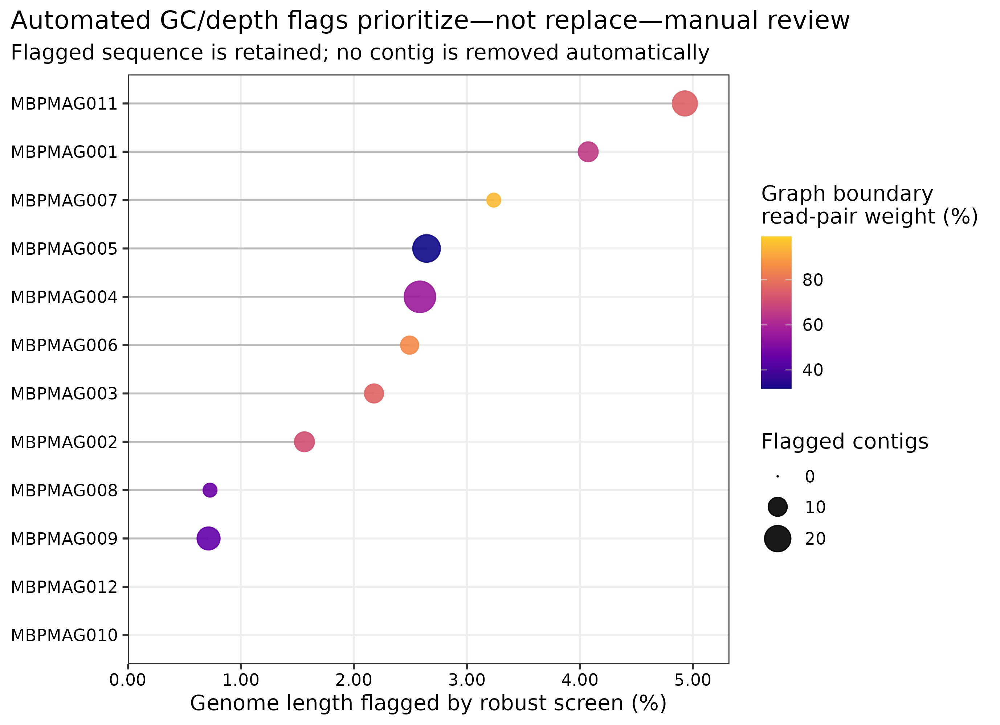

options(timeout = 600)
base_url <- "https://raw.githubusercontent.com/petemeng/metagenomics-best-practices/e219a2cd01609cc208a89e291cbd363ed7f2fbd8/"
files <- read.delim(paste0(base_url, "examples/49/files.tsv"))
for (i in seq_len(nrow(files))) {
path <- files$path[i]
dir.create(dirname(path), recursive = TRUE, showWarnings = FALSE)
if (!file.exists(path)) {
download.file(paste0(base_url, files$source[i]), path, mode = "wb")
}
}MAG 人工校正、命名、数据库提交与补充材料
先给结论：“高完整度、低污染”只说明 MAG 值得进入人工复核，不等于已经可以上传数据库。24 个 95% ANI species-level genome bins（SGBs）中，16 个具有完整 Article 44 质量记录；按当前 NCBI 的 CheckM/CheckM2 completeness >=90% 与总长度 >=100,000 nt 数值门槛筛选后，只有 12 个进入技术复核集。对这 12 个 MAG 的 1,829 条 contig 做 GC 与双样本深度 robust-z 筛查，共标记 135 条、706,042 bp；这些标记只用于定位人工复核对象，没有自动删除任何 contig。由于 anvi’o/Bandage 人工签字、数据所有权确认、NCBI taxonomy 协调、BioProject/BioSample accession 和来源元数据尚未齐全，当前外部可提交数严格记为 0。
重要算力与操作门槛
本次自动化预审使用 1 CPU core，耗时 54.08 秒，峰值 RAM 0.066 GiB；12 份 review FASTA 合计约 35 MB。建议准备 4 cores、8 GB RAM、5 GB 可用磁盘。真正耗时的是人工复核：按 MAG 复杂度预留 10–30 分钟/MAG，大型 anvi’o profile 还会受 BAM 体积影响。没有服务器时，可在普通工作站读取 data/small/49-mag-curation-submission-frozen/ 的压缩审计表与 review FASTA；若需要交互式 anvi’o/Bandage，可把单个 MAG、对应 BAM 和 assembly graph 下载到本地逐一检查。
提示异常标记为什么不应该自动删除序列
保留覆盖、GC、组装连接与质量记录；人工删除或修改 contig 必须留下可追踪依据。
提交 MAG 之前，哪些异常还需要人工检查？
completeness–contamination 图概括基因组质量，逐 MAG 记录则说明每个点的稳定 ID、质量字段、来源关系与 accession。只有两者可以对应，其他研究者才能复核或复用这些基因组。MIMAG 为 MAG 质量与元数据报告建立了最低标准 (Bowers 等 2017年)。


这两个图回答不同问题：quality panel 是序列质量证据，submission funnel 是可提交性证据。不能用前者替代后者。
异常标记为什么不应该自动删除序列？
GC 或深度偏离可能来自错分，也可能来自同一基因组内部的真实异质性。只按单个 robust-z 阈值删除会改变基因组组成，并可能人为提高某些质量指标。本例 135 条标记的作用是定位需要复核的位置，不是已经判定 135 条污染序列。
技术质量与外部提交资格也是两件事。稳定 ID、来源关系、数据权利及提交元数据不足时，即使序列通过数值门槛，也不能替代相应确认。若人工修改最终 FASTA，应保留变更理由并重算全部依赖序列的结果，而不是只更新一个名称或质量数字。
下载本例数据与分析代码
数据与代码清单列出了本例的输入表、分析脚本和环境文件（约 21.5 MiB）。本清单不含原始 FASTQ 或大型数据库；是否需要它们取决于下文的分析起点。清单中的已计算结果仅供核对；读取结果表不等于重新运行统计模型或上游工具。
在新建文件夹中运行下面的 R 代码，下载完成后即可按正文中的相对路径读取文件。需要核验文件版本时，可使用带完整性检查的下载脚本。
先确认系统环境与版本来源
输入对象与 lineage
| 输入 | 固定对象 | 本章用途 |
|---|---|---|
| read/contig depth | PRJEB52977 的 ERR9765746/ERR9765747；41-read-mapping-depth-frozen/ |
双样本 contig-depth 异常筛查 |
| refinement membership | 43-bin-refinement-frozen/ |
MAG–contig 映射 |
| MAG quality/graph | 44-mag-qc-mimag-graph-frozen/ |
CheckM2、GUNC、rRNA/tRNA、assembly graph 证据 |
| 95% ANI catalog | 45-drep-dereplication-frozen/ |
24 个 species representatives 与 sequence SHA-256 |
| GTDB taxonomy | 46-gtdbtk-taxonomy-frozen/ |
未改写的 GTDB R232 lineage |
| MAG coverage | 48-mag-abundance-coverm-frozen/ |
coverage、breadth 与 assembly metadata |
脚本在生成任何 review file 前逐个验证六个冻结包的 file-checksums.sha256，并再次核对 Article 44 与 Article 45 representative sequence hash。known mock identities 不参与 curation gate。
环境配置与完整运行说明
# 自动预审只需 Python 标准库；交互式复核另建环境
mamba create -n metagenome-curation-2026.07 -c conda-forge -c bioconda \
python=3.13 anvio bandage samtools
conda run -n metagenome-curation-2026.07 anvi-self-test --suite mini
conda run -n metagenome-curation-2026.07 Bandage --help | headinstall.packages(c("ggplot2", "dplyr", "readr", "forcats", "scales", "ggrepel"))
library(ggplot2); library(dplyr); library(readr); library(forcats)
set.seed(20260749)
pal_pub <- c(
"Pass" = "#009E73", "Review" = "#E69F00", "Blocked" = "#D55E00",
"High quality" = "#0072B2", "Medium quality" = "#CC79A7"
)
scale_color_pub <- function(...) scale_color_manual(values = pal_pub, ...)
scale_fill_pub <- function(...) scale_fill_manual(values = pal_pub, ...)
theme_pub <- function(base_size = 12) {
theme_bw(base_size = base_size) + theme(
panel.grid.minor = element_blank(),
panel.grid.major = element_line(color = "#EEEEEE"),
axis.text = element_text(color = "black"), legend.key = element_blank(),
strip.background = element_rect(fill = "#EEF3F5", color = NA),
plot.title.position = "plot"
)
}
save_pub <- function(plot, file_base, width = 190, height = 125,
units = "mm", dpi = 350) {
dir.create(dirname(file_base), recursive = TRUE, showWarnings = FALSE)
ggsave(paste0(file_base, ".pdf"), plot, width = width, height = height,
units = units, device = cairo_pdf)
ggsave(paste0(file_base, ".png"), plot, width = width, height = height,
units = units, dpi = dpi, bg = "white")
ggsave(paste0(file_base, ".tiff"), plot, width = width, height = height,
units = units, dpi = dpi, compression = "lzw", bg = "white")
invisible(plot)
}建立 fail-closed 技术复核集
自动质控回答“哪里可疑”，人工校正回答“是否有生物学理由修改”
同一 MAG 内，GC、覆盖深度、四核苷酸组成和 taxonomy 明显偏离的 contig 可能来自污染，也可能是 plasmid、genomic island、rRNA operon、重复区或真实的水平转移。自动规则适合缩小检查范围，不适合自动删序列。删除决定至少要联合 read mapping、assembly graph、taxonomy、gene context 和边界支持。
本次对每个 MAG 内部独立计算 GC 与 log2(mean depth + 0.1) 的 median/MAD robust z-score：
\[ z_i^{\mathrm{robust}}=\frac{x_i-\mathrm{median}(x)}{1.4826\times\mathrm{MAD}(x)}. \]
任一轴满足 \(|z|>3.5\) 即标记 review；阈值在分析前固定，动作永远是 REVIEW_ONLY。若 MAD 为 0，该轴全部记为 0，避免除零和人为放大微小差异。
ROOT="$PWD"
WORK="results/49-mag-curation-submission"
python3 scripts/run_article49_mag_submission.py \
--project-root "${ROOT}" --work-dir "${WORK}"
column -t -s $'\t' "${WORK}/summary/catalog-disposition.tsv" | head -n 15
column -t -s $'\t' "${WORK}/summary/submission-readiness-checklist.tsv"筛选结果固定为：24 个 catalog representatives 中，12 个进入 TECHNICAL_REVIEW_SET，4 个因 completeness <90% 暂停，8 个因未经过完整 Article 44 MIMAG/GUNC audit 暂停。后一类即使 completeness 看起来很高，也不能绕过 lineage 完整性直接上传。

从 completeness/contamination 二维图升级为完整证据链
CheckM2 衡量 completeness/contamination，GUNC 检查 lineage-level chimerism，rRNA/tRNA 支持 MIMAG tier，coverage/GC 与 assembly graph 支持人工 curation，GTDB/NCBI 名称解决 taxonomy，BioSample 解决来源。每层都不可由另一层代替。
注意completeness >=90% 就直接上传
这只是 NCBI 的一个数值门槛。先确认单一 organism、全部识别序列、GUNC/MIMAG、人工 curation、来源元数据、taxonomy 和数据所有权。
做 GC/depth 异常筛查，但不自动删 contig
zcat "${WORK}/summary/contig-anomaly-audit.tsv.gz" | \
awk -F '\t' 'NR==1 || $12=="True"' | head -n 20
column -t -s $'\t' "${WORK}/summary/manual-review-sheet.tsv"12 个 MAG 共 1,829 条 contig，其中 135 条触发至少一个 robust-z 信号；两个 MAG 没有触发项。被标记序列占各 MAG 长度的 0–4.93%，但所有 12 个 Article 44 graph audit 都显示 k141 graph fragmented。后者说明“没有异常点”也不能跳过 graph inspection。

从自动删异常 contig 升级为 review-only 规则
135 条异常 contig 中可能混合污染和真实 accessory sequence。本次只输出 OutlierSignals 与 robust z-score；没有 sequence deletion。人工若决定删除，必须保留理由、原序列/新序列 hash，并从质量评估开始重跑，而不是只修改最终 FASTA。
注意用 GC 或 depth 阈值自动删除 contig
plasmid、genomic island 与 repeat 都可能离群。自动规则只生成 review queue；删除必须有多证据支持，并触发全链重跑。
在 anvi’o 与 Bandage 中逐条签字
去冗余代表是提交坐标，不是自动获得的“物种名”
95% ANI clustering 让一个物种水平 cluster 只保留一个代表，减少同一 biome 内重复提交；ENA 也明确要求优先提交最高质量的 unique-taxon MAG，并建议每个 biome 的每个 species 只保留一个代表 (European Nucleotide Archive 2026年)。SGB_### 是内部稳定键，MBPMAG### 是提交前稳定 isolate；GTDB taxonomy 是注释字段。三者不能互相覆盖。
下面是一份单 MAG 的操作骨架。MAG_FASTA、MAG_BAM 与 ASSEMBLY_GRAPH 必须来自同一 assembly coordinate；BAM 先排序并建立 index。若手动删改 contig，需要重新生成 FASTA、checksum、CheckM2/GUNC、mapping depth、taxonomy 和所有下游表。
MAG_ID="MBPMAG001"
MAG_FASTA="work/curation/${MAG_ID}.fna"
MAG_BAM="work/curation/${MAG_ID}.bam"
ASSEMBLY_GRAPH="work/curation/final.contigs.gfa"
anvi-gen-contigs-database \
-f "${MAG_FASTA}" -o "work/curation/${MAG_ID}.db" \
-n "${MAG_ID}"
anvi-init-bam "${MAG_BAM}" \
-o "work/curation/${MAG_ID}.sorted.bam"
anvi-profile \
-i "work/curation/${MAG_ID}.sorted.bam" \
-c "work/curation/${MAG_ID}.db" \
-o "work/curation/${MAG_ID}-PROFILE" \
--sample-name MOCK1
anvi-interactive \
-p "work/curation/${MAG_ID}-PROFILE/PROFILE.db" \
-c "work/curation/${MAG_ID}.db"
Bandage image "${ASSEMBLY_GRAPH}" \
"work/curation/${MAG_ID}-graph.png"anvi’o 用于联合查看 coverage、GC、taxonomy 与 contig membership (Eren 等 2015年)；Bandage 用于检查 contig 在 assembly graph 中的连接、分支和重复结构 (Wick 等 2015年)。manual-review-sheet.tsv 的 AnvioManualSignoff 与 BandageManualSignoff 只有研究者实际看完并记录证据后才能由 PENDING_INVESTIGATOR_REVIEW 改为通过或拒绝。
生成稳定 isolate、review FASTA 与 MIMAG supplement
NCBI 数值门槛、MIMAG quality tier 与提交就绪是三层概念
- NCBI 当前接收 MAG 的基础序列门槛包括：单一生物体、包含已识别的全部 genome sequence、CheckM/CheckM2 completeness >=90%、总长度 >=100,000 nt (National Center for Biotechnology Information 2026年b)。
- MIMAG high-quality tier 还要结合 contamination、完整 5S/16S/23S rRNA 与 tRNA 等证据 (Bowers 等 2017年)。
- 提交就绪还需要数据所有权、taxonomy 名称、每个 MAG 的 BioSample、来源元数据、sequence/header、项目和文件一致性。
因此，一个 MAG 可以通过 NCBI 数值门槛、属于 MIMAG medium quality，同时仍因元数据或人工复核缺失而不能提交。
自动预审按 SGB 顺序分配 MBPMAG001–MBPMAG012。每条 contig 重写为唯一 header，并加入真实来源 run：
>MBPMAG001_contig00001 [SRA=ERR9765746,ERR9765747]gzip 使用固定时间戳，因而同一输入可得到相同文件 SHA-256。检查 review FASTA 与补充表：
gzip -cd "${WORK}/review-fasta/MBPMAG001.fsa.gz" | head -n 3
column -t -s $'\t' "${WORK}/summary/review-fasta-manifest.tsv" | head
column -t -s $'\t' "${WORK}/summary/mimag-quality-supplement.tsv" | head12 个 technical-review MAG 全部通过 NCBI 的 completeness/size 数值门槛；其中 4 个达到本次 MIMAG high-quality 记录，8 个为 medium quality。review FASTA 仍带有 DO_NOT_SUBMIT 状态，直到所有人工与元数据关卡关闭。
注意用 cluster ID、物种名或 SRA accession 充当 isolate
isolate 应是唯一、稳定的字母数字标识，且不包含 organism 名称。cluster 与 taxonomy 会重算，run accession 表示来源 reads，三者语义不同。
先协调 NCBI organism name，再注册 BioSample
环境样本与 MAG BioSample 不是同一个对象
原始 reads 对应混合群落的 physical/environmental BioSample；每个 MAG 则代表一个计算恢复的单一 organism bin，需要独立的 organism-specific MAG BioSample。NCBI 要求每个 MAG 使用唯一、稳定的字母数字 isolate，且不把 organism 名缩写塞进 isolate (National Center for Biotechnology Information 2026年a)。ENA 同样要求每个 MAG 关联独立 MAG sample，并通过 sample derived from 指回来源样本 (European Nucleotide Archive 2026年)。
NCBI 不直接采用未发表的 GTDB ad hoc name。提交前把“唯一 isolate + 未改写 GTDB lineage”两列发给 genomes@ncbi.nlm.nih.gov，由 taxonomy 团队返回可用 organism name (National Center for Biotechnology Information 2026年b)：
column -t -s $'\t' "${WORK}/summary/taxonomy-name-request.tsv" | head收到名称后，再建立一个研究级 BioProject 和每个 MAG 一个 MIMAG BioSample。当前 NCBI MIMAG 6.0 的必填来源字段包括 isolate、collection_date、env_broad_scale、env_local_scale、env_medium、geo_loc_name、isolation_source 与 lat_lon (National Center for Biotechnology Information 2026年c)。本地 draft 对教程来源无法证明的字段明确写为 investigator must supply：
column -t -s $'\t' "${WORK}/summary/biosample-review-draft.tsv" | head
column -t -s $'\t' "${WORK}/summary/genome-batch-review-draft.tsv" | headNCBI 路径的最小对象关系是：
one research effort -> one BioProject
mixed source sample -> raw-read BioSample + ERR/SRR/DRR runs
one organism bin -> one MIMAG BioSample -> one MAG assembly file每个 MAG 在 batch submission 中单独一行、单独一个 sequence file；一个 batch 最多 400 个 assemblies (National Center for Biotechnology Information 2026年b)。不要随机拼接 contigs，也不要把 organism 写成 metagenome；病毒基因组走 MIUVIG/病毒提交路径，不走 MIMAG (National Center for Biotechnology Information 2026年c)。
从“挑最好看的 bin”升级为 checksum-covered species representative
先用 95% ANI 去冗余，再在每个 cluster 内固定 representative 和 sequence SHA-256。这样补充表、taxonomy、abundance 与提交文件指向同一序列；文件名变化不会悄悄替换 genome。
从 GTDB species label 升级为 NCBI taxonomy 协调
GTDB R232 为 24/24 SGB 提供 species assignment，但这不自动保证名称可被 NCBI Taxonomy 接受。提交前发送未改写 lineage；收到 NCBI 名称后才能填 organism。内部 SGB/isolate ID 始终不随 taxonomy release 改变。
从只写 NCBI 路径升级为 INSDC-aware 提交计划
NCBI 与 ENA 最终通过 INSDC 交换数据，但注册表、字段名、认证方式和 validation 工具不同。研究开始时选择一个主提交入口；不要在两端重复创建同一 assembly，也不要把一端的临时 accession 当成另一端的字段。
注意把 GTDB taxonomy 直接填进 NCBI organism
GTDB 的 unpublished/ad hoc names 未必存在于 NCBI Taxonomy。先提交 isolate + unmodified GTDB lineage 给 NCBI taxonomy 协调。
注意所有 MAG 共用一个 BioSample
raw reads 对应混合样本，MAG 对应单一 organism bin。每个 MAG 都需要自己的 organism-specific MAG BioSample，并指回来源 runs/sample。
需要走 ENA 时，重新映射为 ENA manifest
accession 只能由数据库签发
PRJNA...、SAMN...、PRJEB...、SAMEA...、GCA_... 都不是本地文件名。只有完成注册或提交后，数据库返回的 accession 才能进入论文。提交前可保留空值、UNREGISTERED 或阻断状态，但不能制造“看起来像真的”编号。
点开：为什么公开教程数据不能直接再次提交
NCBI 明确要求只提交由提交者自行确定的序列，不应把从公共数据库下载的数据作为自己的新 genome submission (National Center for Biotechnology Information 2026年b)；ENA 对 third-party data assembly 也要求先联系 helpdesk (European Nucleotide Archive 2026年)。本次 ERR9765746/ERR9765747 是公开 mock 数据，只用于演示预审结构。review FASTA 被显式标记为 DEMONSTRATION_REVIEW_FILE—DO_NOT_SUBMIT，没有触发任何外部提交。
NCBI draft 不能原样冒充 ENA manifest。ENA 要求预注册 study 与独立 MAG sample，MAG sample 使用 GSC MIMAGS checklist，并通过 mandatory sample derived from 指向来源 sample。contig-level MAG 通常是一份 manifest 加一份 FASTA，通过 Webin-CLI 的 genome context 校验 (European Nucleotide Archive 2026年)。
manifest 至少记录 STUDY、SAMPLE、ASSEMBLYNAME、ASSEMBLY_TYPE、COVERAGE、PROGRAM、PLATFORM 与 FASTA；来源 runs 可写入 RUN_REF。正式 accession 由 ENA 返回，不能提前填写。先只做 validation：
webin-cli \
-username "${WEBIN_USER}" \
-password "${WEBIN_PASSWORD}" \
-context genome \
-manifest "${ENA_MANIFEST}" \
-validate使用 third-party data 或只提交 MAG、不提交 lower-level assembly/reads 时，应先按 ENA 文档联系 helpdesk 或建立并关联 environmental source sample。-validate 成功不等于已经提交，ERZ 也不是论文中最终引用的 assembly accession (European Nucleotide Archive 2026年)。
从“文件准备好”升级为权限与来源检查
公开数据可用于复现，不等于可以作为自己的新提交。当前 review package 故意保留 5 个 blocked gates，external_submission_performed=false、accessions_invented=false。这不是缺失结果，而是防止重复提交和错误归属的正确结果。
注意为了写论文先编 accession
提交前只写“accession pending”或保持 blocked；数据库签发后再更新。仿真的 PRJNA/SAMN/GCA 编号会污染数据血缘。
注意把 validation success 当作已公开
Webin-CLI -validate、本地 checksum 和 NCBI 页面预检都不是 release。论文应引用数据库最终可检索的 study/sample/assembly accessions 与 release 状态。
注意重复提交公共数据或在 NCBI/ENA 两端重复提交
先确认提交权、原始研究的现有 accession 与主提交入口。third-party assembly 应联系数据库支持；INSDC 会交换数据，不需要双重提交。
保存证据、出图并结果核对
python3 scripts/freeze_article49_mag_submission.py \
--project-root "${ROOT}" --work-dir "${WORK}" \
--output-dir data/small/49-mag-curation-submission-frozen
Rscript scripts/plot_article49_mag_submission.R \
--input-dir data/small/49-mag-curation-submission-frozen \
--output-dir figures
python3 scripts/validate_article49_mag_submission.py \
--project-root "${ROOT}" \
--frozen-dir data/small/49-mag-curation-submission-frozen \
--output-dir results/49-mag-curation-submission \
--figure-dir figures \
--chapter chapters/49-mag-curation-submission.qmd保留基因组修改与提交信息
Methods template
Species-level genome bins were defined by 95%-ANI dereplication, and each representative was tracked by a stable SGB identifier and SHA-256 digest. Representatives were eligible for pre-submission review only when a complete CheckM2/GUNC/MIMAG audit was available and the assembly met the contemporary NCBI numerical requirements of >=90% CheckM2 completeness and >=100,000 nt total length. Within each eligible MAG, contigs were screened using median/MAD robust z-scores for GC content and log2(mean depth + 0.1) in two independently mapped metagenomes; absolute robust z-scores >3.5 were flagged for review and never triggered automatic sequence removal. Coverage, GC, taxonomic assignment, gene context, and assembly-graph connectivity were designated for joint inspection in anvi’o and Bandage. Stable alphanumeric isolate identifiers were assigned independently of taxonomy. MIMAG quality fields, GTDB-Tk v2.7.2 taxonomy against GTDB R232, source-run relationships, FASTA SHA-256 values, and submission-readiness gates were retained in tabular form. Organism names, per-MAG BioSamples, source metadata, and accessions were required before external submission; no third-party tutorial assembly was submitted.
Results template
Of 24 species-level representatives, 16 had a complete upstream MAG audit and 12 additionally passed the NCBI completeness and assembly-size numerical gates; four were held below the completeness threshold and eight were held because the complete audit was unavailable. The technical-review set comprised 1,829 contigs. A prespecified robust GC/depth screen flagged 135 contigs (706,042 bp) for manual review, but no contig was removed automatically. Four MAGs met the recorded MIMAG high-quality criteria and eight were medium quality. All 12 required investigator signoff, taxonomy coordination, source-metadata completion, and registered project/sample accessions. Consequently, zero assemblies were classified as externally submission-ready, no accessions were invented, and no external submission was performed.
换到自己的研究中，先检查哪些条件？
- 在分析前确定提交权、主提交入口和是否已有 BioProject/Study；对 third-party data 先咨询 NCBI/ENA。
- 用 95% ANI 或研究预设的 species boundary 去冗余；每个 biome/species cluster 选择最高质量代表，并固定内部 SGB ID 与 sequence SHA-256。
- 只把具有完整 CheckM2、GUNC、MIMAG、coverage 和 graph lineage 的 MAG 放入技术复核集；门槛与例外写入 protocol。
- 为每条 contig 汇总 GC、多个样本 depth、taxonomy、gene annotation 与 graph neighbor；异常检测只负责排序。
- 在 anvi’o/Bandage 中记录 reviewer、日期、证据、决定与理由。任何删改都产生新 FASTA、新 checksum，并重跑 QC、taxonomy、abundance 和补充表。
- 为每个代表分配不含 organism 名的稳定 isolate；将 GTDB release 与未改写 lineage 单独保留。
- NCBI 路径先协调 organism name，再注册一个研究级 BioProject、来源 mixed-sample BioSample 与每 MAG 一个 MIMAG BioSample；用真实 run accession 填
derived_from/FASTA[SRA=...]。 - ENA 路径建立 study、environmental source sample、独立 MAG sample 和 GSC MIMAGS checklist；为每个 MAG 生成 manifest，并先执行 Webin-CLI
-validate。 - 将 assembly method/version、binning/refinement、coverage、sequencing platform、MIMAG fields、文件 hash、最终 accession 与 release date 写入补充材料和 Data availability。
- 只有数据库返回并可检索的 accession 才进入终稿；blocked/pending 状态保留到责任人逐项签字。
图中应该保留哪些信息？
- funnel 从 24 到 0 保留每个 gate 的真实数量，不用百分比掩盖小样本。
- readiness matrix 使用绿色/橙色/朱红区分 pass/review/blocked，并直接打印英文状态。
- quality plot 同时画 completeness=90% 与 contamination=5% 参考线；颜色只表示记录到的 MIMAG tier。
- curation plot 用 flagged length percentage 而非仅用 contig 数，避免碎片化 MAG 因 contig 多而被视觉放大。
- 每个点以稳定 isolate 标注；taxonomy 放在表中，避免长名称遮挡。
- 所有图内文字为英文，导出 PDF、350 dpi PNG 与 LZW TIFF；Data availability table 另导出 TSV/CSV，不把 accession 只藏在图片里。
回到最初的问题
把自动质量门、异常 contig 标记、人工复核、稳定命名与数据库提交拆成独立状态；未获得 accession 前绝不伪造可提交结论。
参考文献
- MIMAG 最低信息与质量标准 (Bowers 等 2017年)
- NCBI MAG submission FAQ 与当前序列门槛 (National Center for Biotechnology Information 2026年b)
- NCBI MIMAG BioSample package 6.0 (National Center for Biotechnology Information 2026年c)
- NCBI BioSample organism 与 MAG isolate 规则 (National Center for Biotechnology Information 2026年a)
- ENA MAG sample、manifest 与 Webin-CLI 路径 (European Nucleotide Archive 2026年)
- anvi’o 交互式多组学检查 (Eren 等 2015年)
- Bandage assembly graph inspection (Wick 等 2015年)